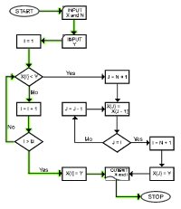
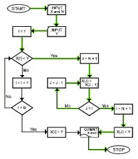
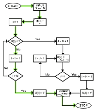
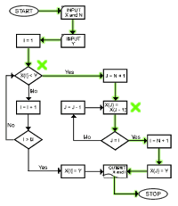

Home >> Glass Box Testing
Contents
Glass Box Testing
The testing of software based on the internal logic of a module/system. Glass Box Testing operates in both inspection and demonstration mode (debug feature).
Back to topStatement Coverage
Tests such that every statement is executed at least once.
- Easy to design
- Easy to communicate
- Does no exercise all conditions
- Inflection points produce accurate anomolies.
This is a reasonable minimum test.
Example: Insert a number Y into a descending sorted array X of N values.
| Test Case #1: X={6,4,2}, Y=1 | Test Case #2: X={6,4,2}, Y=7 | |
|---|---|---|
|  Click to enlarge |  Click to enlarge |
Back to top
Branch Coverage
Tests such that each branch of code executes at least once (or every decision gets at least one T and at least one F).
- Easy to design
- Does not excercise all conditions
Using 85% of the branches usually produces acceptable results.
Back to topCondition Coverage
Tests such that every combination of conditions is executed.
- Logical
- Inflection points of produce ambiguity
- Number of cases explodes
Example: Insert a number Y into a descending sorted array X of N values.
| Test Case #3: X={4}, Y=3 |
|---|
|  Click to enlarge |
Back to top
Path Coverage
Tests such that every execution path is travelled.
- Logical and Complete
- Many test cases
Example: Insert a number Y into a descending sorted array X of N values.
| Test Case #4: X={}, Y=5 |
|---|
|  Click to enlarge |
This is approximately 10 fold more analysis and cases than Branch Coverage. This is imparative for medical and other critical components.
Back to top